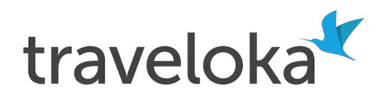
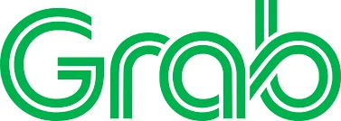
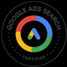
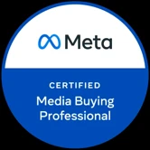
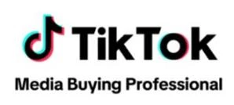

Marketing strategist specializing in digital media and performance.
I start with the business goal and the audience, then decide where media can make a difference. I bring hands-on experience across digital campaign planning, execution, and measurement, from Indonesian small businesses to regional platforms. Analytics guides where I invest. I use AI where it can improve how marketing teams work.


Ran Grab campaigns across the Philippines and Cambodia, from launch and creative testing to client reporting and reconciliation.
Cannes Silver Lion · Viral Film, 2024Google Marketing Platform · Tableau · Python · R



For teams that need a partner to turn growth goals into a media strategy and manage execution through reporting.
For teams already advertising that need a clear plan to improve results.
For marketing teams that want to pilot AI for a task like reporting or creative briefing.
morethanmarka.com · In development